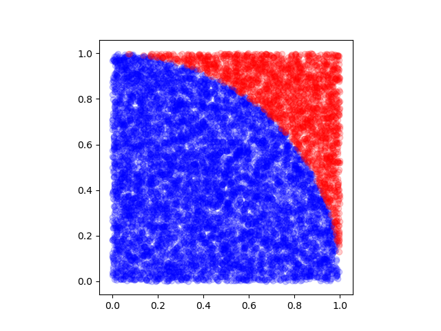

On the computation of π
Table of Contents
1 Asking the math library
My computer tells me that π is approximatively
from math import *pi
3.141592653589793
2 Buffon's needle
Applying the method of Buffon's needle we get the approximation
import numpy as np N = 10000 np.random.seed(seed=42) x = np.random.uniform(size=N, low=0, high=1) theta = np.random.uniform(size=N, low=0, high=pi/2) P = sum(x + np.sin(theta) > 1) / N 2/P
3.128911138923655
3 Using a surface fraction argument
A method that is easier to understand and does not make use of the \(\sin\) function is based on the fact that if \(X \sim U(0,1)\) and \(Y \sim U(0,1)\), then \(P[X^2+Y^2 \leq 1] = \pi/4\) (see "Monte Carlo method" on Wikipedia). The following code uses this approach:
import matplotlib.pyplot as plt np.random.seed(seed=42) x = np.random.uniform(size=N, low=0, high=1) y = np.random.uniform(size=N, low=0, high=1) inside = (x**2 + y**2) <= 1 outside = np.logical_not(inside) fig, ax = plt.subplots(1) ax.scatter(x[inside], y[inside], c='b', alpha=0.2, edgecolor=None) ax.scatter(x[outside], y[outside], c='r', alpha=0.2, edgecolor=None) ax.set_aspect('equal') plt.savefig(matplot_lib_filename) print(matplot_lib_filename)

It is then straightforward to obtain a (not really good) approximation to π by counting how many times, on average, \(X^2 + Y^2\) is smaller than 1:
4 * np.mean(inside)
3.1556
4 Through Wallis' product
John Wallis' product for π states that the infinite product below converges to \(\pi / 2\). See the geometrical proof.
prod = 1 for i in range(2, N): prod *= i / (i-1) if i % 2 == 0 else (i-1) / i prod * 2
3.141435562175509
5 As the root of a function
As we know, \(sin(\pi) = 0\), thus an approximation for π can be found by approximating a root of \(sin(x)\). This can be done using Newton's method, for instace, or any other available numerical analysis tool.
from scipy.optimize import fsolve results = fsolve(sin, x0=3) results[0]
3.141592653589793